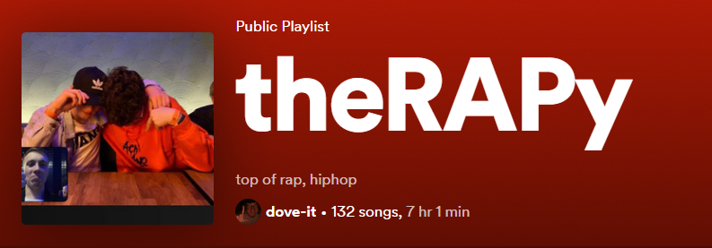
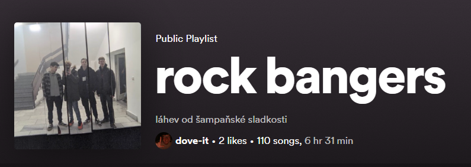
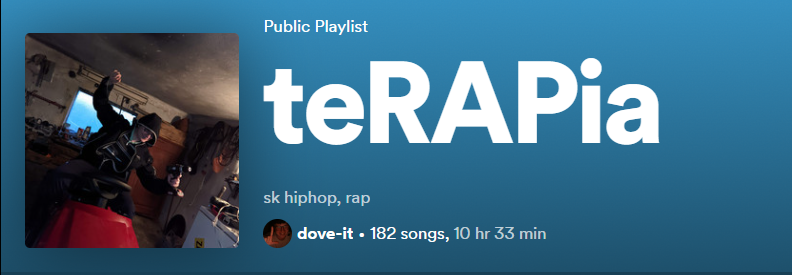

Rád bych se s vámi podělil o několik playlistů z mé vlastní tvorby, které patří mezi mé nejposlouchanější a k nimž se nejraději vracím. Vložil jsem zde tedy tři ukázky.
V playlistu "rock bangers" najdete mé oblíbené skladby z rocku, pop-rocku a metalu. Naopak playlist "theRAPy" je hříčkou se slovy, která reflektují, že se zde převážně nachází rapová hudba a zároveň je mou formou terapie a poslouchám ho vždy, když mám horší náladu. Podobně to funguje i u "teRAPie", avšak, jak již napovídá název, tento playlist obsahuje hudbu slovenských interpretů.
  